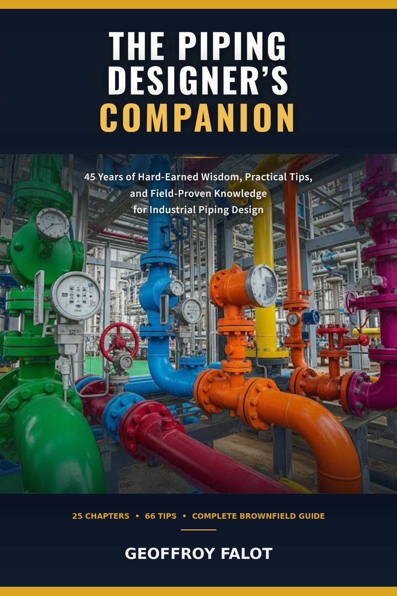

For industrial piping designers
Field wisdom for the next generation of piping designers.
Seven years on brownfield sites taught me what no textbook covers — the decisions, the workarounds, the judgment calls that only come from standing next to someone who's been doing this for thirty years. This site is where that knowledge lives.

Tip #12 · Brownfield Layout
As-built drawings on revamp projects are almost always wrong. Pipes move during shutdowns, supports get repositioned, equipment gets replaced without anyone updating the documentation. Walk the corridor yourself with a tape measure before you commit to a routing. Ten minutes of field verification saves three days of rework — and spares you the conversation with the client about why the new line doesn't fit.